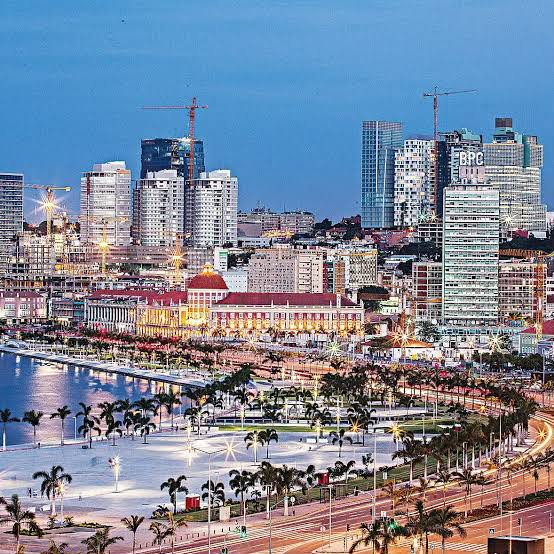

Luanda é a capital de Angola e a província mais populosa do país. É o principal centro político, económico, financeiro e cultural angolano, reunindo importantes monumentos históricos e uma intensa vida urbana.
Luanda
1.655 km²
8.665.510
Kimbundu e Português

Mufete (peixe cacusso ou carapau grelhado, feijão de óleo de palma, farofa, batata-doce e banana-pão).
Fortaleza de São Miguel, Palácio de Ferro e a Igreja de Nossa Senhora do Cabo.
Luanda, Belas, Cazenga, Cacuaco, Viana, Talatona e Kilamba Kiaxi.